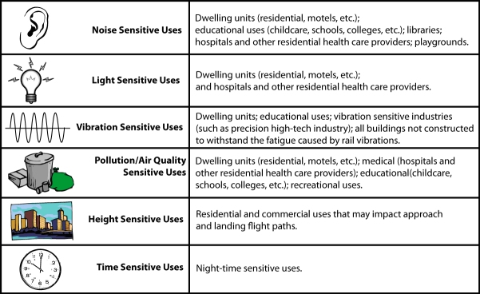

Air Cargo
Air cargo-domestic and international freight/express and mail-is moved in dedicated all-cargo aircraft and regular passenger aircraft. According to the Federal Aviation Administration (FAA) National Plan of Integrated Airport Systems (NPIAS), air cargo is generally concentrated at busy commercial service airports, and air cargo flights do not substantially contribute to airport congestion because they often occur during off-peak periods. However, if the off-peak periods occur either during early morning or evening when people are in their residences, air cargo operations are likely to be in conflict with residential developments.
FAA data show that nine of the top 25 U.S. foreign trade freight gateways by value are air. Currently, air cargo forms an important part of the U.S. economy. According to the FAA, 32 percent of exports and 21 percent of imports (by value) were shipped by air in 2006. Air is the preferred mode for shipping high value, lightweight and perishable goods. FAA projections show that air cargo is expected to continue to grow, with revenue ton-miles expected to grow at an annual rate of 5.1 percent through 2025.
As shown in Table 1, the top twenty freight airports in the U.S. in 2009 (based on cargo landed weight) were:
Table 1. Top Twenty U.S. Freight Airports, 2009.
|
|
The air cargo industry has seen many changes over the past few years including: new security regulations; the maturation of the domestic package express market; increased use of mail substitutes (i.e., e-mail) shifts to other modes (especially truck), and escalating fuel prices. In August 2007, Congress signed into law recommendations from the 9/11 Commission (Recommendations of the 9/11 Commission Act 2007 Pub. L. 110-53), which included the screening of all cargo placed in passenger aircraft at the same level as passenger checked baggage. This called for a system to be put in place within three years that would require 100 percent inspection of cargo transported on passenger aircraft. This is expected to increase both the costs and time requirements for shipment of cargo, and will affect landside access delivery of the freight.
Other areas where air cargo may impact airport operations and development include the need for airport development to support cargo operations, including cargo sorting and transfer facilities, and the need for all-weather runway systems to support reliable operations. The FAA identified that improvements may be required at some selected airports including New York’s JFK, Los Angeles, Chicago O’Hare, San Francisco, Dallas-Fort Worth, Anchorage, Atlanta, New Orleans, and Miami to keep pace with the growing international air cargo market.
As an example, Miami International Airport (MIA) is the world’s largest gateway to Latin America and the Caribbean and controls the north south cargo flows in the Western hemisphere. Miami handles 82 percent of all air imports and 70 percent of all air exports from the Latin American/ Caribbean region. Miami serves as a hub for distribution of perishable products, hi-tech commodities, telecommunications equipment, textiles, pharmaceuticals and industrial machinery. In 2008, Miami’s air trade was valued at $40.7 billion or 32.6 percent of all the state’s total (air and sea) trade with the world (MIA Freight Brochure 2008-2009).
Encroachment Issues Affecting and Created By Airport Freight Activities
Incompatible land uses near airports are a major concern and challenge for all airport operations (freight and passenger). This is complicated by multiple layers of oversight and regulation that cover airports, their operations, flight paths, planning, land use decisions, community outreach, and growth opportunities. This is further complicated by the frequently conflicting goals of many airport operators, commercial carriers and economic development groups that are often focused on increasing revenues and maximizing the utility and operation of the airport. Table 2 lists common encroachment issues related to air cargo activity.
Table 2. Common Land Uses and Conflicts Adjacent to Air Cargo Activity
By far the most pressing issue that airports face is noise. In 1979, the Aviation Safety and Noise Abatement Act (49 U.S.C. 47501 et.seq.) created the first pilot program under which the Federal Government funded up to 24 noise control plans a year. This was expanded in the 1980s and 1990s and, by the end of the century, the FAA Airport Improvement Program grants totaled over $2.6 billion. This also led to what is known as FAA’s Part 150 program. Airport operators develop comprehensive noise and land use compatibility programs. The programs identify noise mitigation projects and procedures to reduce aviation noise. Part 150 is a voluntary program that encourages airport operators to develop noise exposure maps and noise compatibility programs. These identify noise contours and land use incompatibilities. The FAA then determines if the 150 study is in accordance and once this is authorized an airport operator can then apply for grants for studies and for airport noise compatibility projects.The FAA provides Airport Noise Expsoure Maps publicly on their website.
The primary responsibility for integrating airport considerations into land use planning lies with local jurisdictions. According to the GAO (2000), this presents difficulties for many airports, as they cannot control development in surrounding communities, but are held responsible by these communities when airport noise adversely affects developments that are built close to airports. The FAA has set standards for noise levels, and programs that can be utilized to redress these issues. The FAA has also issued multiple items of guidance regarding noise mitigation and land uses that have been identified as incompatible with airport activities including residential, schools, churches, and nursing homes. However, because the jurisdictional responsibility for implementing land use planning and zoning lies with local jurisdictions, unless these entities are part of any noise reduction or abatement program or involved in planning activities, problems may well arise.
The FAA is the primary federal agency responsible for airport-land use issues. Other federal agencies that may exert decision-making authority over issues that can indirectly or directly impact land use around airports include:
- Department of Defense
- Department of Homeland Security
- Housing and Urban Development
- Department of Transportation
- Environmental Protection Agency
- Federal Communications Commission
- Federal Emergency Management Agency
- United States Army Corps of Engineers
- United States Fish and Wildlife Service
- Department of the Interior